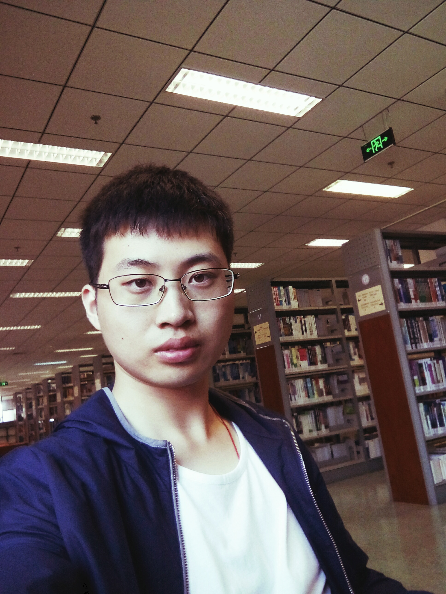
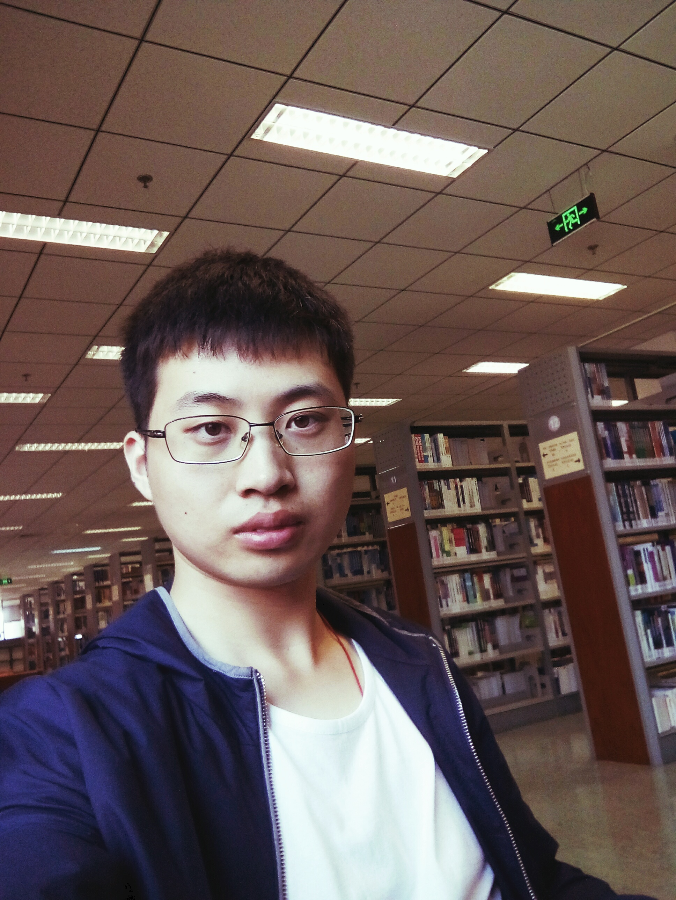

Introduction
I'm a Ph.D student in Department of Civil and Environmental Engineering at National University of Singapore. Besides, I'm a member of Singapore Geophysics Project in the Center for Offshore Research and Engineering with applications in petroleum, civil, and environmental industry. I've finished my undergraduate education in Dalian University of technology. My advisor is Elita, and my current research topic is Near Surface Imaging by Compressive Sensing.
I am open-minded, willing and have broad interests like
soccer, table tennis and reading. Ice-Snow Sports such as skating and skiing are my strong point .
I'm deeply interested in seismic wave inversion and digital signal and image processing. And I decide to be committed to working on it.
Research Interests
- Seismic wave inversion .
- Seismic wave simulation
- Digital signal and image processing
- Subsurface characterization
Education
2013.9--2017.6 B.Eng. Department of Civil and Environmental Engineering in Dalian Univercity of technology
2017.8----------- PH.D. Department of Civil and Environmental Engineering in National University of Singapore
Honor
03/2015 1st Prize in International Mathematical Contest in Modeling (Meritorious Winner in Mathematical Contest in Modeling (MCM/ICM) (2015)
07/2015 1st Prize in "Challenge Cup" National Curricular Academic Science and Technology Contest in Liaoning Province
11/2015 2nd Prize in "Nengtuo Cup" Science and Technology Competition in DUT
04/2016 3rd Prize in "Climbing Cup" Science and Technology Competition in DUT
04/2015 Excellent Award in Jiaotong Science and Technology Competition in DUT
09/2014 2nd Prize of Team in Summer Social Practice conducted by DUT
06/2015 2D CAD Engineer Certificate
Skills
Autodesk Inventor
Autodesk CAD
Matlab
C Language
ABAQUS
PKPM
SAP2000
ETABS
Undergraduate Research
1.Anti-seismic Analysis for Dalian Subway
2.Seismic Fragility Analysis of Concrete-filled Steel Tubular Arch Bridge Considering the Near-fault Effect
3.Modeling and Characteristic Inquiry of a Two-Dimensional Traffic Flow Based on Cellular Automata
4.Modeling of Optimizing the Eradication of Ebola
5.3D Printing Lab in DUT
Contact
Email: wangyingbo11@hotmail.com
Mobile: (+86)18840829693
 
